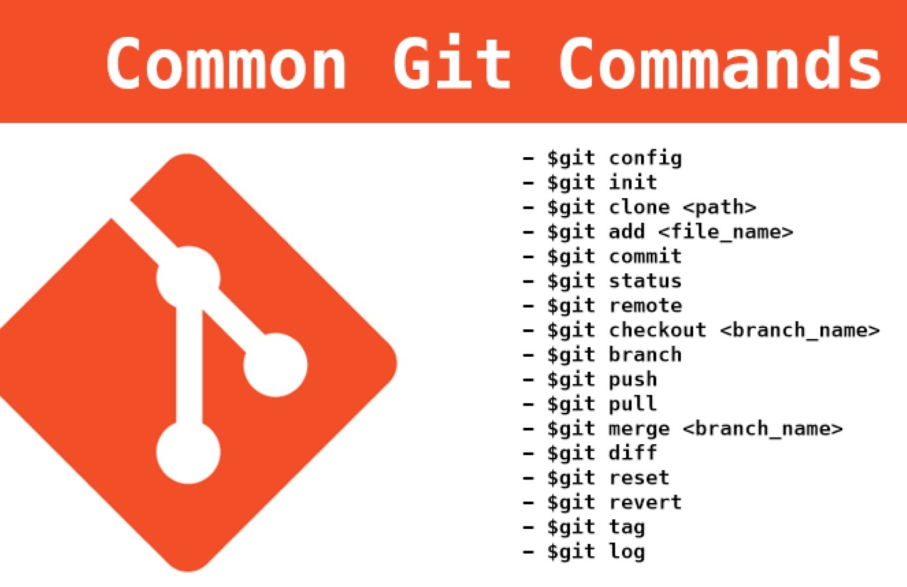

O que é um Versionamento?
É o processo de criar novas versões de um código toda vez que ocorre uma mudança significativa nele. Em vez de salvar muitos arquivos separados, o versionamento de código permite criar essas versões diretamente no código. Assim, enquanto o código está sendo desenvolvido, o programador cria versões à medida que melhora, modifica ou implementa algo. Facilitando o trabalho em equipe, pois cria um “backup” de todas as mudanças.
Git Bash
Git Bash (“Bash” é um acrônimo para “Bourne Again Shell”), que se refere a um tipo de shell (interface de linha de comando) usado em sistemas operacionais Unix.
- Com o Git Bash, você pode executar comandos como git clone, git commit, git push e outros diretamente no prompt de comando do Windows, mas com a sintaxe e a funcionalidade do Git.
- O Git Bash é uma ferramenta que oferece uma experiência de linha de comando similar à encontrada em sistemas operacionais baseados em Unix, como o Linux e o macOS.
O que é um Repositório?
É um local onde você pode armazenar seus arquivos de código-fonte, documentação e outros recursos relacionados a um projeto. Cada repositório contém o histórico de revisões de cada arquivo, permitindo que você rastreie mudanças ao longo do tempo. Permite que você compartilhe, colabore e organize seu trabalho de desenvolvimento de software.
Git HUB
- O GitHub é uma plataforma que hospeda repositórios Git.
- Ele permite que programadores, utilitários ou qualquer usuário cadastrado contribuam em projetos privados e/ou de código aberto de qualquer lugar do mundo.
